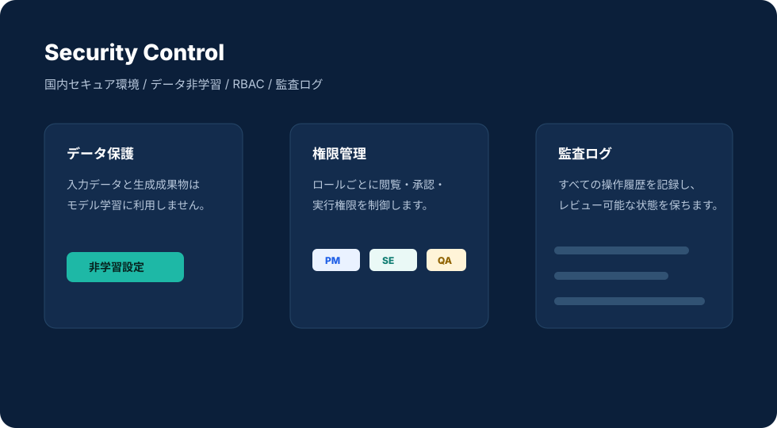

漏洩リスク低減
個人情報・秘密情報をAI処理前に除去し、安全な活用環境を実現します。
生成AI活用と情報保護を両立するために、データ非学習、国内セキュア環境、権限管理、監査ログ、個人情報除去を重視しています。
仕様、ソースコード、設計思想、レビュー観点は、企業にとって重要な知的資産です。Kaoooaiは、AI開発の速度だけでなく、機密情報と内部統制を守る運用設計を前提にしています。
お客様の入力データや生成成果物を、AIモデルの再学習に利用しません。
要件に応じて国内インフラ、専用環境、閉域・Local AI構成を含めて検討します。
RBACによる権限設定と、すべての操作履歴を記録する監査ログに対応します。

Privacy AIにより、安全化後データのみをLLMへ送信。名前、住所、Email、電話番号、銀行・カード番号、API Key、パスワードなどを対象にできます。
個人情報・秘密情報をAI処理前に除去し、安全な活用環境を実現します。
権限、ログ、承認フローを組み合わせ、利用状況を管理します。
オンプレミスや社内サーバーでのLocal AI環境構築にも対応可能です。
利用環境やセキュリティ要件に応じて、3つの提供形態から最適な構成を検討できます。閉域環境や社内サーバー利用を含む場合は、PoC時に技術条件を確認します。
Kaoooaiクラウドにセキュアに接続し、AI機能を即座に利用する最もシンプルな構成です。短期間でのセットアップが可能で、すぐに導入検証を開始できます。
貴社独自のプライベートクラウド（VPC環境）やオンプレミスサーバーにKaoooai SDKを構築し、安全な内部ネットワーク内からAI機能を稼働させる構成です。
各開発用のPCや閉域ローカル環境内にAIモデルおよびSDKを直接構築し、一切の外部通信（インターネット接続）を必要としない完全隔離の構成です。
内容に応じてご案内します